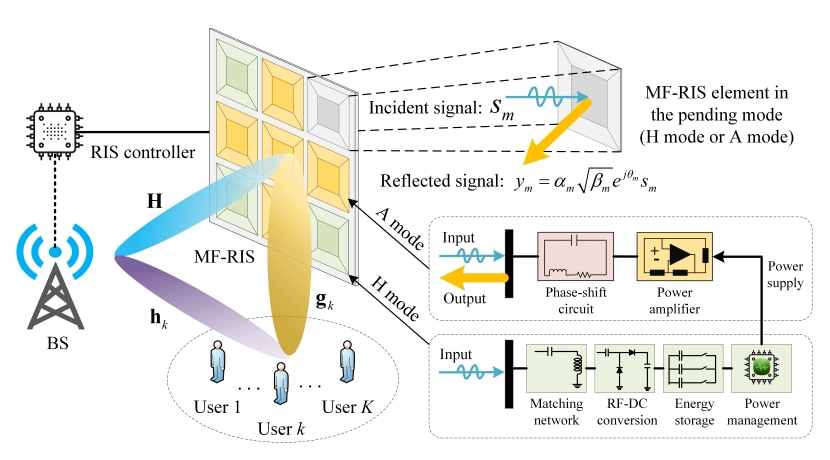

An illustration of the MF-RIS assisted communicatuion system

An MF-RIS aided MISO system.

Third image description.


My research interests include Communication-Efficient Federated Learning (FL) in Wireless Networks, Multi-Functional Reconfigurable Intelligent Surface (RIS) Aided Communication, Non-Orthogonal Multiple Access (NOMA) Inspired Next-Generation Communication as well as their application in IoT networks. I received the B.Eng. and Ph.D. degrees in the School of Information and Communication Engineering from the Beijing University of Posts and Telecommunications (BUPT), China, in 2018 and 2023, respectively.

I'm interested in reconfigurable intelligent surface (RIS), unmanned aerial vehicle (UAV), physical-layer security (PLS), and non-orthogonal multiple access (NOMA). From June 2022 to August 2022, I was a Visiting Student with Southern University of Science and Technology (SUSTech) under the supervision of Prof. Changsheng You. From September 2022, I'm a Visiting Student with National University of Singapore (NUS), Singapore, under the supervision of Prof. Rui Zhang. I'm currently pursuing the Ph.D. degree with the State Key Laboratory of Networking and Switching Technology.

content.....
content.....

content.....

My research interests in Multi-Functional Reconfigurable Intelligent Surface (MF-RIS) Aided Communication, as well as its application in Industrial Internet of thing (IIoT) networks. I received the B.Eng. in the School of Information and Communication Engineering from the Beijing University of Posts and Telecommunications (BUPT), China, in 2023.
BibTex Code HerePlain text